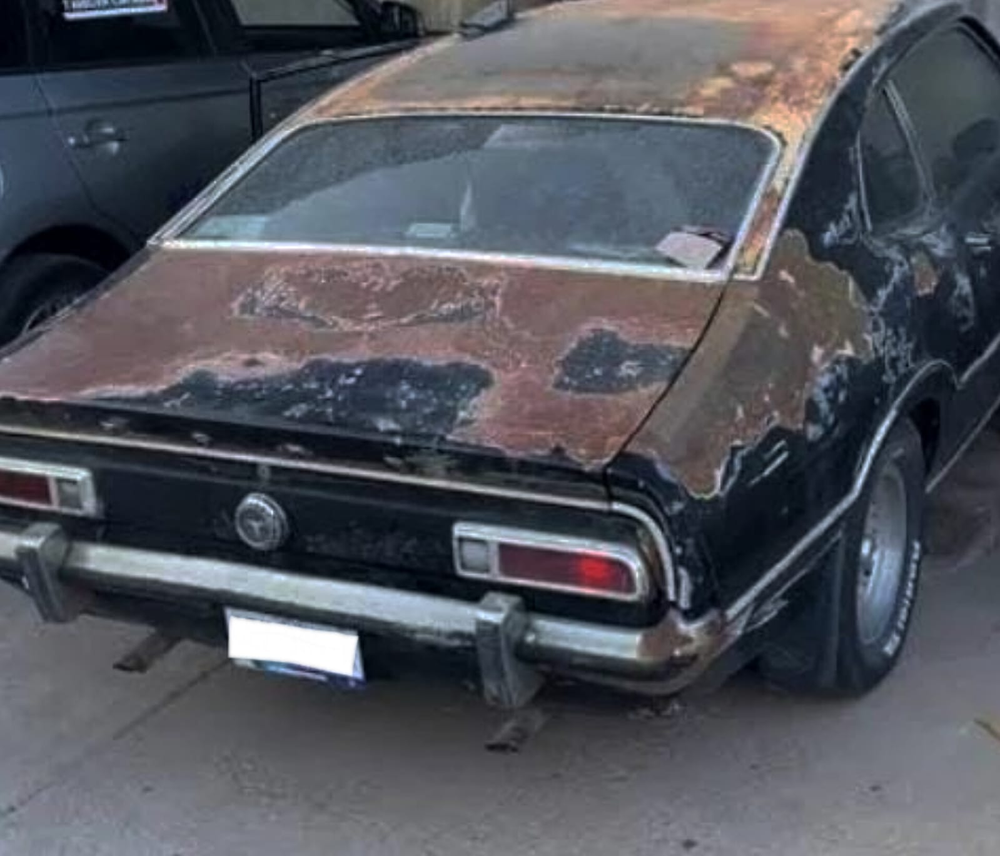
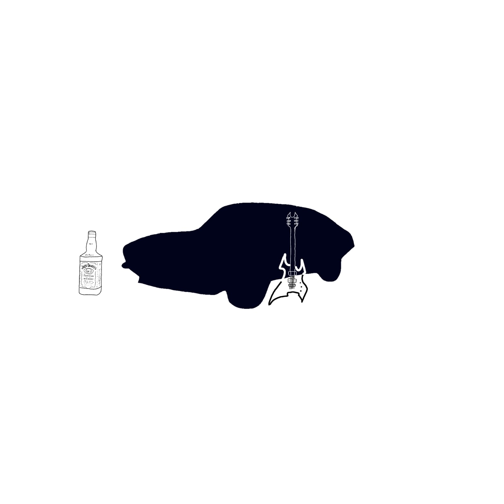
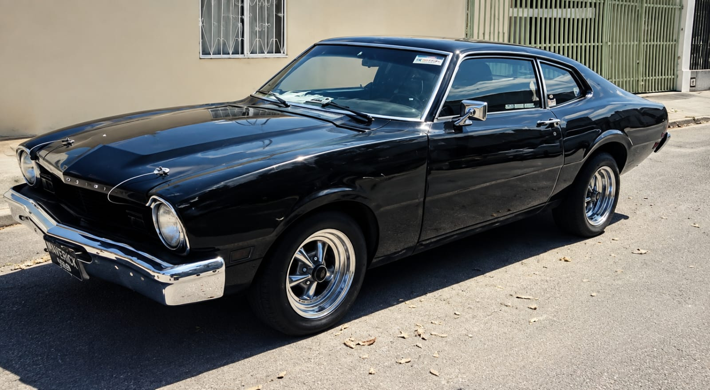
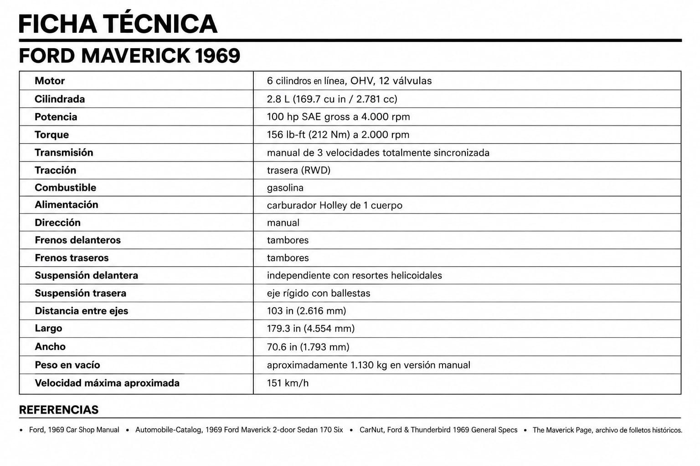

Maverick '69-Diez años para volver a Rugir
ML- Una herencia, una promesa y diez años para devolverle la vida.04 Octubre 2026 | 9:00 pm

propiedad de Juan . Fotografía tomada por el propietario y cedida para este artículo.
“Es un Maverick 69', un tío, hermano de mi papá lo tuvo desde agencia, pero en un accidente lo choco y todo el frente quedó desecho y quedó en su garaje sin ser reparado. Siempre le pedí a mi tío que lo arreglaremos, pero por distintas situaciones nunca lo hicimos. Falleció a causa de la diabetes y mi sorpresa fue que me lo había dejado en herencia. Cuando cumplí 25 comencé con la restauración y 10 años después, ahí está el resultado. Corre como un demonio, me encanta agarrar carretera con mis rolas favoritas (el estéreo es el original de cassette). A veces tangos, música balcanica, paso doble... Soy muy variado en cuanto a música se refiere.” — Juan, propietario del Ford Maverick ’69.
El arte de la restauración
Durante años, muchos automóviles clásicos terminan abandonados en garajes, patios o talleres, esperando una segunda oportunidad. Restaurarlos requiere tiempo, paciencia y, sobre todo, una conexión especial con la máquina. El Maverick ’69 de Juan es precisamente eso: un automóvil que pasó del abandono a convertirse nuevamente en protagonista de la carretera. Pero devolverlo a la vida también significó realizar importantes modificaciones. Juan nos cuenta que todo el frente tuvo que ser reemplazado por el de otro automóvil, ya que el original había quedado irreparable después del accidente. Entre las modificaciones que realizó también están un motor naftero 2.0L EcoBoost turbo y un sistema híbrido de 2.5L, además de interiores de piel y una pintura en color negro.
A pesar de todas estas modificaciones, hay un detalle que decidió conservar y que conecta directamente a Perla Negra con su historia: el estéreo original de cassette. Un pequeño elemento que hoy sigue formando parte de la personalidad de este Maverick y de las historias que Juan continúa viviendo al volante.
```
propiedad de JUAN . Fotografía tomada por el propietario y cedida para este artículo.
¿Cuanto cuesta restaurar un clasico?
El costo puede aumentar rápidamente dependiendo del estado de la carrocería, el motor, el interior, la pintura y la disponibilidad de repuestos. A esto se suman las horas de trabajo y los años que puede tomar completar un proyecto.
Perla Negra: El Maverick con vibes de Rockstar

M-Rockstar- ML(valtyna)
Su dueño decidió bautizarlo “Perla Negra”, un nombre que encaja perfectamente con la personalidad que este Maverick ha construido a lo largo de los años. Más que un automóvil, se ha convertido en su compañero de aventuras, viajes y muchas historias en la carretera, incluso compartiendo algunos de esos momentos con chicas. Con su actitud de verdadero rockstar, Perla Negra tiene una regla particular: su dueño no suele prestarlo y es el único que lo conduce. Después de tantos kilómetros, aventuras y recuerdos, para él no se trata simplemente de un auto, sino de una máquina que forma parte de su propia historia.
El resultado de un sueño

propiedad de JUAN . Fotografía tomada por el propietario y cedida para este artículo.
Como espectadores, resulta increíble ver cómo este automóvil pasó de estar abandonado en un garaje, esperando durante años una segunda oportunidad, a convertirse en lo que hoy es: una verdadera estrella de la carretera. Y ahora queremos preguntarte a ti: ¿te animarías a emprender una restauración como la de Juan?
